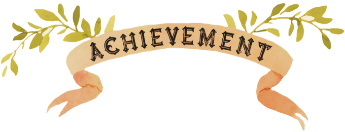
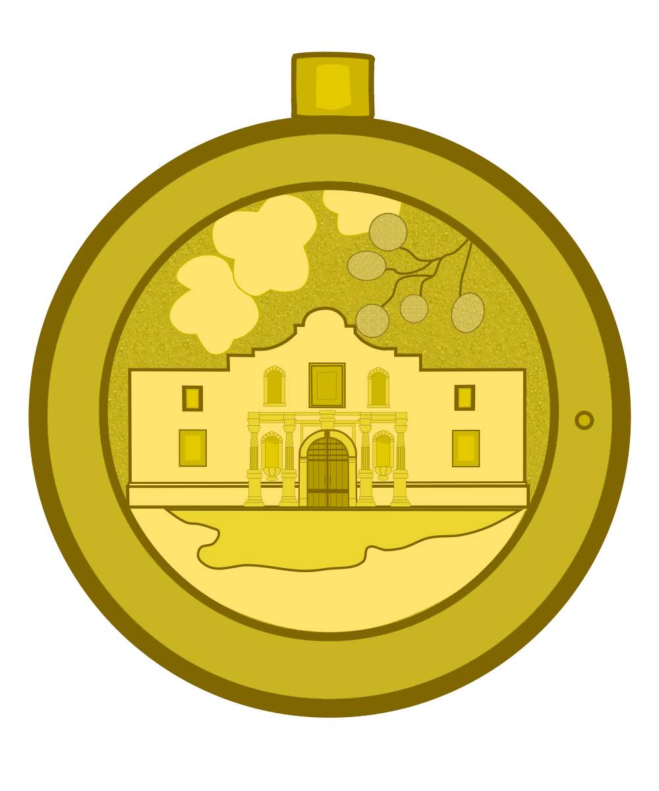
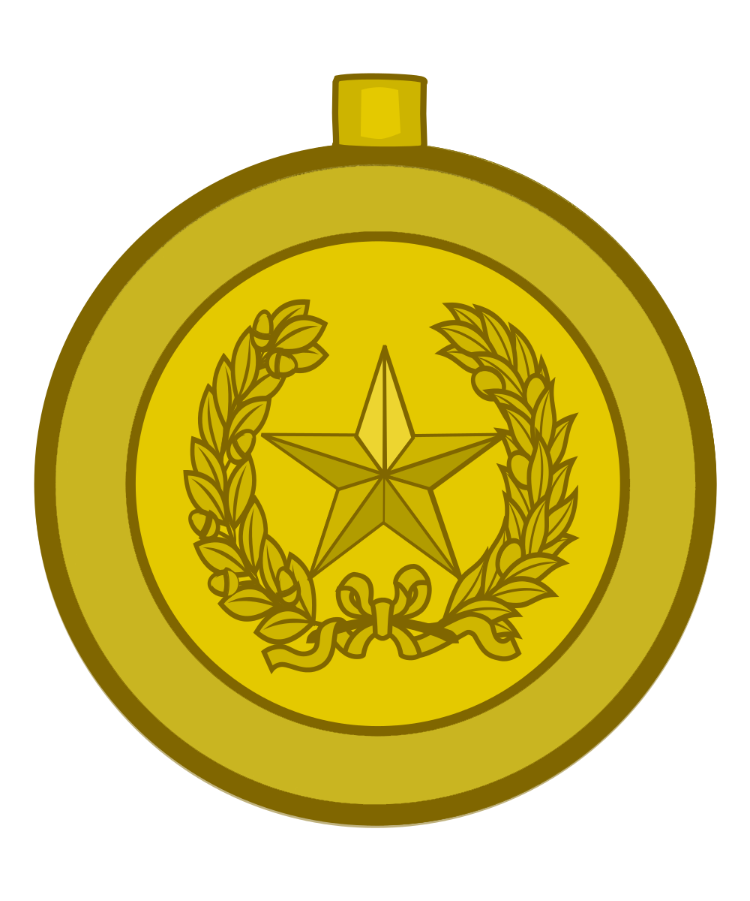
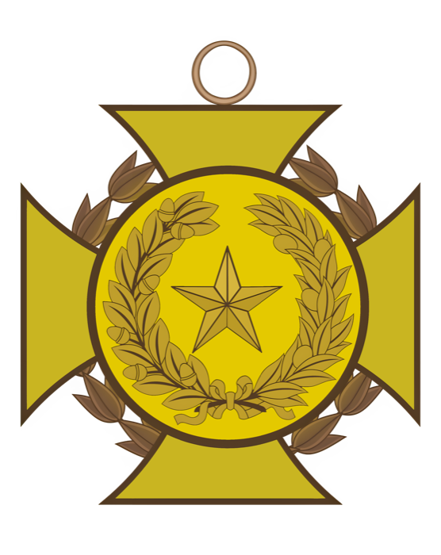
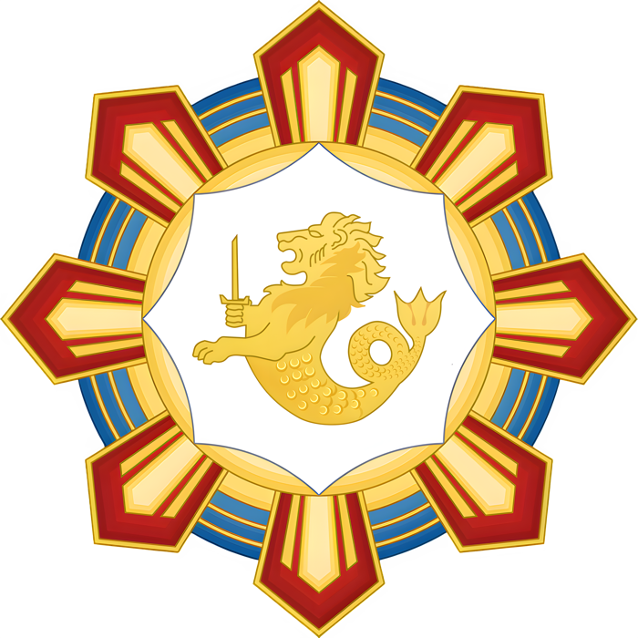

Legionnaire
军团兵
参与 10 次 War of Rights 活动

Eques
骑士
参与 30 次活动
Eques
骑士
完成 30 次宣传与记录

Praefectus Equitum
骑士长官
参与 60 次活动

Praefectus Castrorum
宿营长官
获得 30 点支援点
Tribunus Cohortis
大队军事护民官
参与 100 次活动
Tribunus Angusticlavius
参谋军事护民官
获得 60 点支援点
Praefectus Legionis
军团总务长官
获得 30 点指挥点
Dux
都督
获得 60 点指挥点